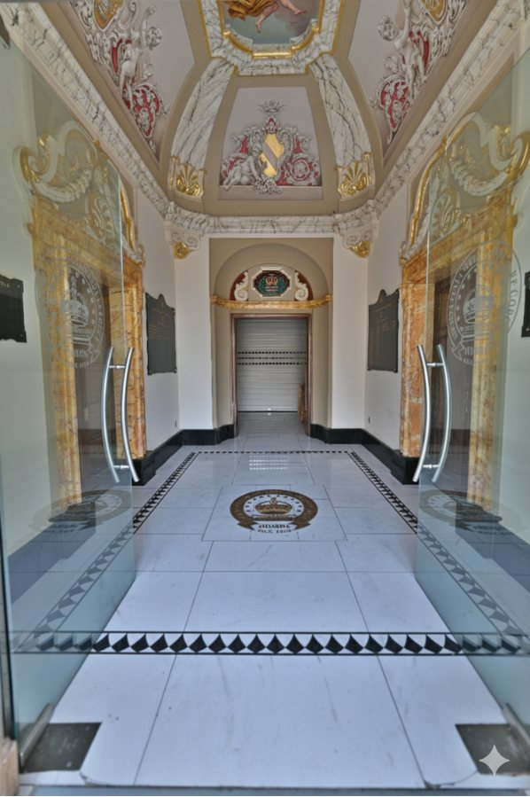
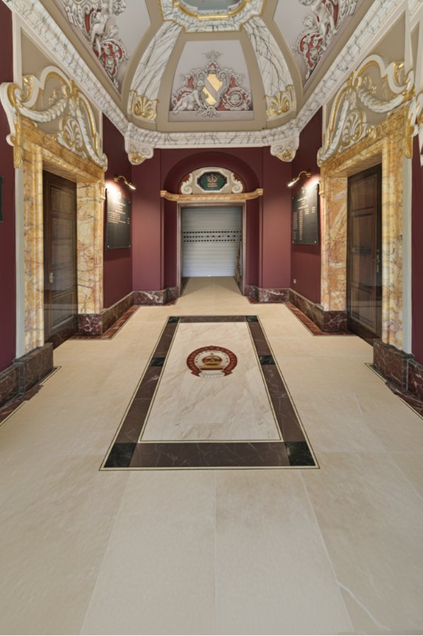
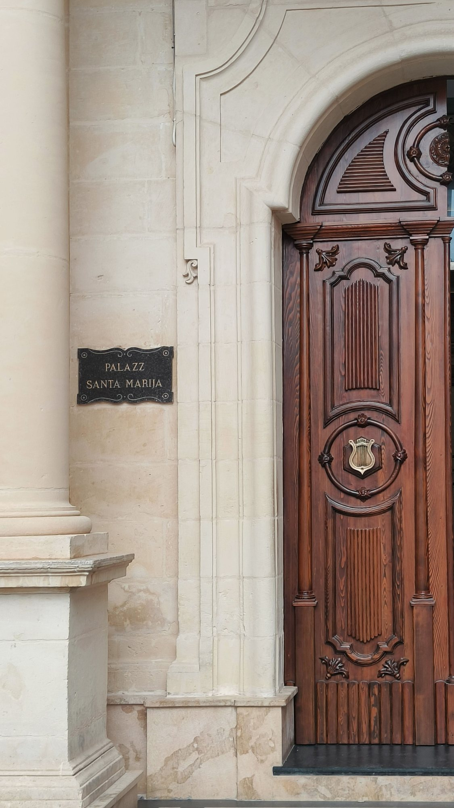
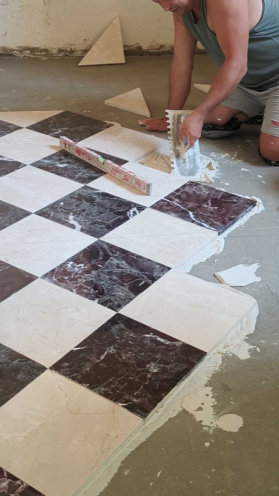

Civic & Heritage · Mqabba, Malta
Każin Santa Marija, Mqabba

Since 1910Każin Santa Marija
A civic band club in continuous service since 1910, standing opposite the parish church at the heart of Mqabba. Buildings this embedded in a community's memory don't get redesigned; they get carried forward.
The first phase reimagined the entrance floor, framing existing heritage details in new marble rather than replacing them. The result reads as restoration first, design second: new material in service of what was already there.
Later phases will extend the same principle through the rest of the club, treating the building's history as the brief rather than a constraint on it.
Before & After
The entrance floor

Before

After

